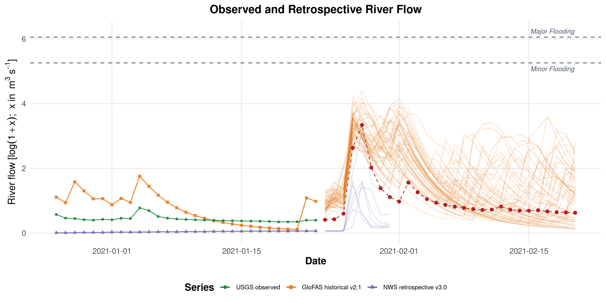
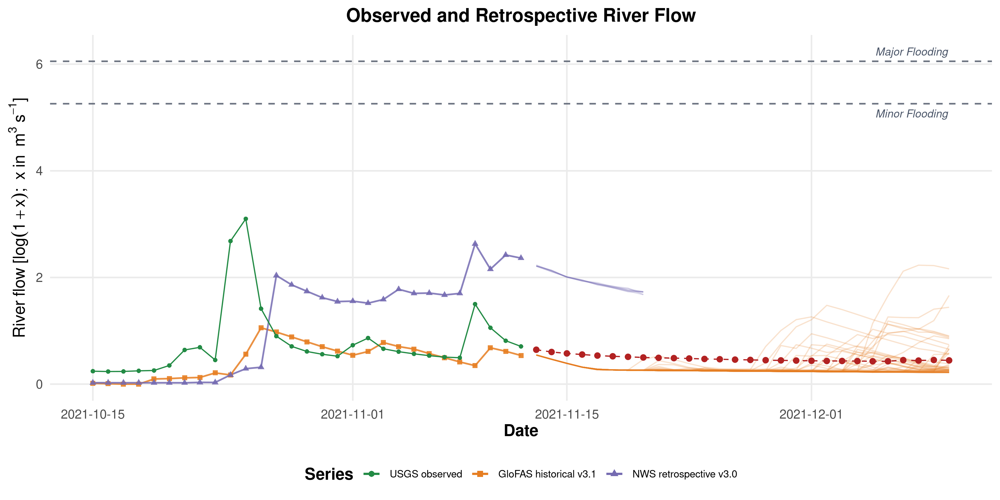
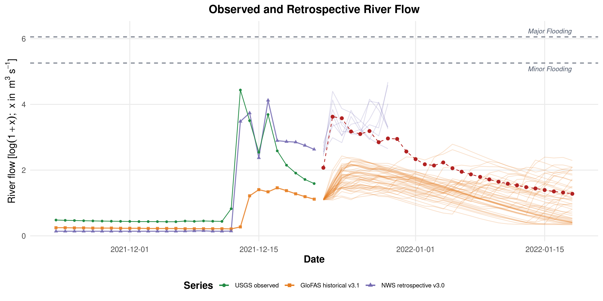
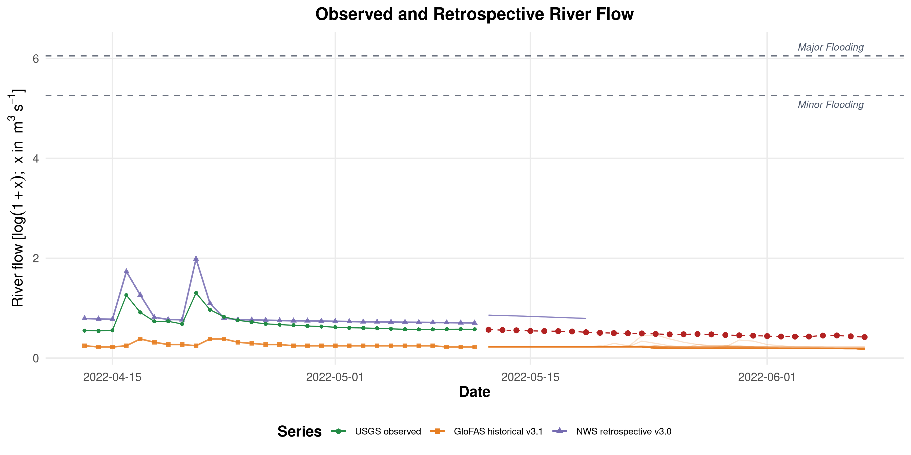

Five-Cutoff Setup/Support Review
These figures are generated from the validated cutoff-specific setup/support workflow and mirrored into the revised-article repo for review.
See INPUT_ALIGNMENT_AUDIT.md and TRANSFORM_AND_LINEAGE_AUDIT.md in this same directory for the supporting audits.
2021-01-23
Directory: 20210123_exal_m_t1
Bundle class: histfix_long_history_bundle
Requested history: 1987-05-29 to 2021-01-23
Retrospective available from: 1987-05-29
Forecast window: 2020-12-26 to 2021-02-20
Flow display scale: log1p_cms
Selected-run internal scale: log1p_cms
NWS policy: nws_retro_v21 with nws_retro_v30 tail fill after natural coverage end
GloFAS policy: glofas_hist_v21_htessel_cons
Coverage audit: USGS=True, PPT=True, SOIL=True, GDPC=True, Retros=True
usgs.png
SHA256: 2347f262a1304340...
Bytes: 1282520

precip_soilmoisture_climatePC1_faceted_labeled.png
SHA256: 5c16a7efb31b74ff...
Bytes: 2040982

retrospective_log_discharge_plot_faceted.png
SHA256: 28395725f0d5049a...
Bytes: 2052571

forecats.png
SHA256: f8da46496eed0680...
Bytes: 917952

2021-11-12
Directory: 20211112_exal_m_t1
Bundle class: histfix_long_history_bundle
Requested history: 1987-05-29 to 2021-11-12
Retrospective available from: 1987-05-29
Forecast window: 2021-10-15 to 2021-12-10
Flow display scale: log1p_cms
Selected-run internal scale: log1p_cms
NWS policy: nws_retro_v21 with nws_retro_v30 tail fill after natural coverage end
GloFAS policy: glofas_hist_v31_lisflood_cons
Coverage audit: USGS=True, PPT=True, SOIL=True, GDPC=True, Retros=True
usgs.png
SHA256: 5c8d77b136120a15...
Bytes: 1279513

precip_soilmoisture_climatePC1_faceted_labeled.png
SHA256: 0378a5374c2535be...
Bytes: 2049809

retrospective_log_discharge_plot_faceted.png
SHA256: a4cb42a688375ce4...
Bytes: 1926119

forecats.png
SHA256: d0cae2a94d29d203...
Bytes: 300813

2021-12-21
Directory: 20211221_exal_m_t1
Bundle class: histfix_long_history_bundle
Requested history: 1987-05-29 to 2021-12-21
Retrospective available from: 1987-05-29
Forecast window: 2021-11-23 to 2022-01-18
Flow display scale: log1p_cms
Selected-run internal scale: log1p_cms
NWS policy: nws_retro_v21 with nws_retro_v30 tail fill after natural coverage end
GloFAS policy: glofas_hist_v31_lisflood_cons
Coverage audit: USGS=True, PPT=True, SOIL=True, GDPC=True, Retros=True
usgs.png
SHA256: bc4a5a1c52c1020d...
Bytes: 1283658

precip_soilmoisture_climatePC1_faceted_labeled.png
SHA256: 5109f521df619ea7...
Bytes: 2051613

retrospective_log_discharge_plot_faceted.png
SHA256: be4d93af315fa393...
Bytes: 1927930

forecats.png
SHA256: dfbc5f7778ec3b6f...
Bytes: 588015

2022-05-11
Directory: 20220511_exal_m_t1
Bundle class: histfix_long_history_bundle
Requested history: 1987-05-29 to 2022-05-11
Retrospective available from: 1987-05-29
Forecast window: 2022-04-13 to 2022-06-08
Flow display scale: log1p_cms
Selected-run internal scale: log1p_cms
NWS policy: nws_retro_v21 with nws_retro_v30 tail fill after natural coverage end
GloFAS policy: glofas_hist_v31_lisflood_cons
Coverage audit: USGS=True, PPT=True, SOIL=True, GDPC=True, Retros=True
usgs.png
SHA256: d1f0379b821da2be...
Bytes: 1284847

precip_soilmoisture_climatePC1_faceted_labeled.png
SHA256: 179b01ed33bb2938...
Bytes: 2058165

retrospective_log_discharge_plot_faceted.png
SHA256: a6fe606062d39a53...
Bytes: 1932978

forecats.png
SHA256: aa80e0349fcf4f76...
Bytes: 181369

2022-12-25
Directory: 20221225_exal_m_t1
Bundle class: histfix_long_history_bundle
Requested history: 1987-05-29 to 2022-12-25
Retrospective available from: 1987-05-29
Forecast window: 2022-11-27 to 2023-01-22
Flow display scale: log1p_cms
Selected-run internal scale: log1p_cms
NWS policy: nws_retro_v21 with nws_retro_v30 tail fill after natural coverage end
GloFAS policy: glofas_hist_v31_lisflood_cons
Coverage audit: USGS=True, PPT=True, SOIL=True, GDPC=True, Retros=True
usgs.png
SHA256: a35bd0cd8eee55a5...
Bytes: 1282898

precip_soilmoisture_climatePC1_faceted_labeled.png
SHA256: a450b7fa331403f6...
Bytes: 2062646

retrospective_log_discharge_plot_faceted.png
SHA256: a670b1de369c4a57...
Bytes: 1935883

forecats.png
SHA256: a4f8545c539534f3...
Bytes: 694311